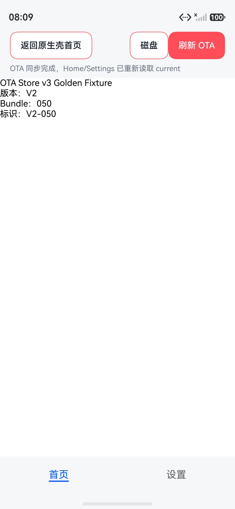
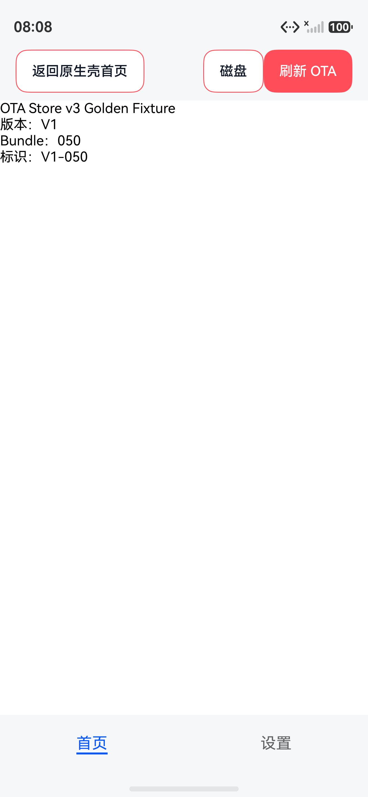
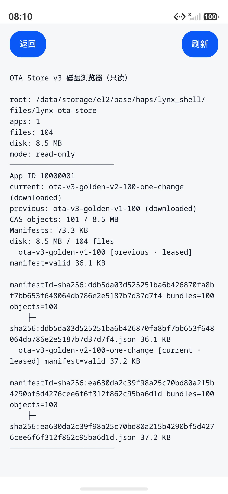
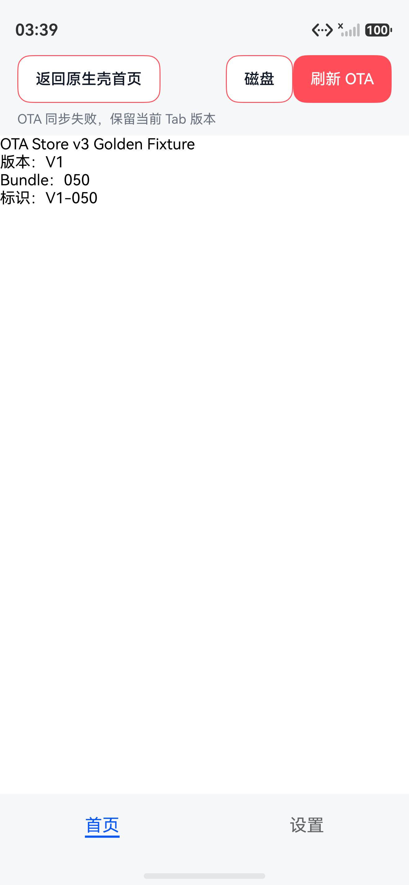
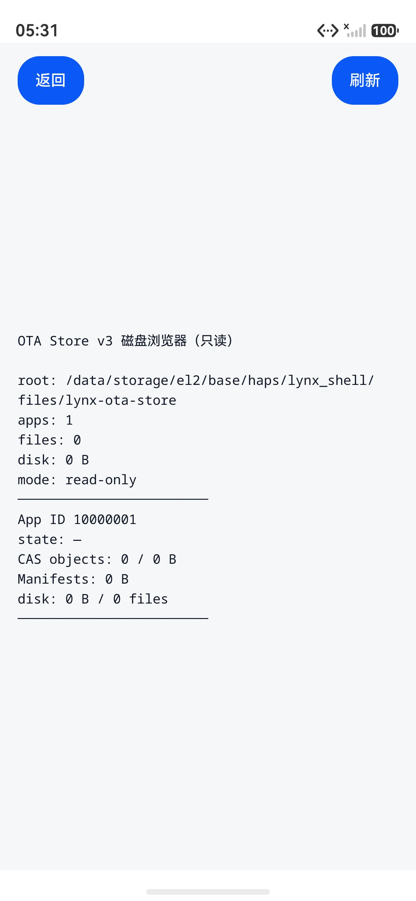
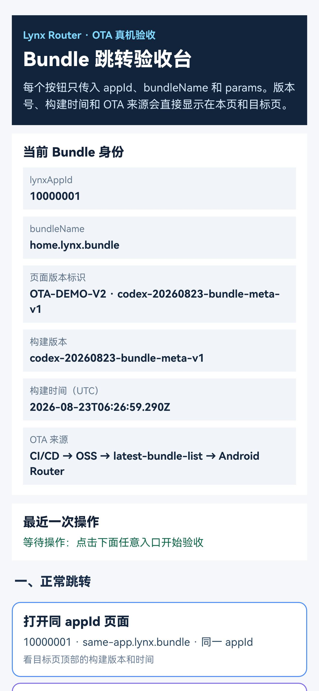

Lynx Navigation · OTA Store v3
HarmonyOS OTA Store v3 测试报告
本报告记录 HarmonyOS ArkUI/ArkUI Tabs 对 OTA Store v3 的实现、构建和模拟器运行态验收。验证使用本地 Golden Fixture Server，不把外网服务或历史 Store v2 Mock 结果伪装成当前 v3 通过。
一眼结论
测试矩阵与实际结果
| 用例 | 动作 | 结果 | 证据 |
|---|---|---|---|
| H01 Fixture | 检查 V1/V2 及三端 Fixture | PASS：两版各 100 个 Bundle，路径集合一致，只有 050 的 bytes/size/SHA 变化。 | verify-ota-store-v3-fixture.mjs，exit 0 |
| H02 构建 | 执行 HAR/App Hvigor 构建 | PASS：assembleHar 与 assembleApp --no-daemon 均 BUILD SUCCESSFUL；保留 DevEco/Lynx 依赖既有警告和 unsigned signing 提示。 | 最终产物 harmony-default-unsigned.app，SHA-256=cfd7bed0…e59cd6 |
| H03 V1 首次安装 | 卸载重装 App，服务端 active=V1，冷启动 | PASS：latest=1；Bundle=100；8,775,400 bytes；Store 写入 100 个 CAS Object 和 1 份完整 Manifest；页面显示 V1-050。 | HDC 启动、Server metrics、V1 截图 |
| H04 V1 → V2 增量 | 服务端切换 V2，点击 ArkUI Tab 的“刷新 OTA” | PASS：latest=1；只请求 pages/10000001/bundle-050.lynx.bundle；87,754 bytes；新增 1 个对象；页面显示 V2-050。 | 最终产物真实 HTTP metrics、V2 截图、Inspector |
| H05 完整 Manifest | 检查 V1/V2 本地 Manifest 与对象引用 | PASS：Manifest 始终是 100 条完整快照；V2 只替换 050 的 Object 引用，不生成“只有 1 条”的增量 Manifest。 | Store v3 源码、Fixture 校验、Inspector 文本 |
| H06 Tab cache-only | ArkUI Tabs Home/Settings 来回切换 | PASS：latest=0、Bundle=0；Tab 使用已提交 current 和 lease，不因切换触发 OTA。 | ArkUI Tabs 截图、Server metrics |
| H07 Tab 主动刷新 | V1 current 下服务端切换 V2，点击“刷新 OTA” | PASS：刷新完成后两个 Tab 重建并显示 V2-050；Bundle=1、87,754 bytes。 | 最终产物 Tab 刷新截图、Server metrics、current/previous |
| H08 ETag | 同一进程再次刷新同一 latest | PASS：本轮再次刷新返回 304；Bundle=0、bytes=0。 | 最终产物 Server metrics：304 / Bundle=0 |
| H09 坏 SHA | V2 050 返回错误 SHA，主动刷新 | PASS：提示“OTA 同步失败，保留当前 Tab 版本”；current 仍为 V1，previous 仍为 V2，CAS=101，没有提交坏 Manifest/State。 | 坏 SHA 截图、Inspector、Server metrics |
| H10 回滚与 lease | V2→V1 切换并查看 Store 快照 | PASS：current/previous 指向正确 Manifest；活跃 LynxView 显示 leased；刷新和页面重建未删除被引用对象。 | Inspector 文本/截图、Runtime lease 代码 |
| H11 rawfile baseline | 无 remote current 时打开内置 Bundle | PASS：rawfile 直接读取 ArrayBuffer，不复制到 files/lynx-ota-store；v3 CAS 只保存远程对象。 | EmbeddedBundleRegistry、Provider、静态门禁 |
| H12 no candidate | 源码与运行入口扫描 candidate/trial | PASS：Harmony Store v3 只有 current/previous；没有 candidate 文件、字段或 API。 | check_harmony_shell.py 89/89 |
| H13 App ID 隔离 | 检查 CAS/Manifest/State 路径作用域 | PASS（静态与实现）：路径固定为 apps/<appId>/...，对象不会跨 App ID 复用。当前本轮未在设备上同时安装两个业务 App。 | Store v3 静态门禁与路径代码 |
| H14 事务边界探针 | TEST-only 注入 Object、Manifest、State 提交边界 | PASS：10 个 fault/ENOSPC 点均由脚本执行并通过 JSONL 机器断言；提交前 current 保持 V1；after_state_commit_report_failure 的 current 正确为 V2；重试结果符合对象复用预期。 | 故障矩阵 JSONL + 自动断言 + HDC Inspector |
| H15 容量/ENOSPC/断连恢复 | capacity override=0；Object/Manifest/State 受控 ENOSPC；Server disconnect | PASS（受控模拟）：容量预检 latest=1、Bundle=0、current V1；三个写入点 ENOSPC 均不提前激活，Manifest/State 前已 durable Object 可在重试时 Bundle=0；断连后 current V1、CAS 100。 | 故障矩阵 JSONL + Inspector |
| H16 进程级 force-stop | 在 Object、Objects、Manifest、State 提交前/后的 15 秒暂停点由 HDC force-stop | PASS：5 个暂停点全部以唯一 token 命中；保护性冷启动分别看到提交前 current=V1/CAS=101、提交后 current=V2/CAS=101；10 行结果机器断言通过，正常恢复 Bundle=0。 | 进程 crash JSONL + 自动断言 + HDC Inspector |
| H17 物理/生产边界 | 真实断电、ENOSPC、物理设备、签名包和生产 CDN/TLS | BLOCKED：HDC force-stop 已覆盖进程终止，但不等同真实断电；容量 override 不等同 OS 真实 ENOSPC；未连接物理 Harmony 设备，也未配置签名。 | 保留为发布前门禁 |
| H18 删除与内置基线 | 删除全部 OTA，force-stop 后以空 latest 启动，查看 Inspector，再打开 rawfile baseline | PASS：删除时活体 lease 先保护对象；进程重启后无 State/lease 的 orphan 被回收，Inspector 显示 files=0、CAS=0、Manifest=0；打开内置基线不发 OTA 请求。 | 删除 Inspector + 内置基线截图、metrics |
| H19 NavigationSnapshot | 同一 session 连续打开两个 OTA Page，再返回宿主页重新打开内置基线 | PASS：两个 Page 日志复用同一个 snapshot ID 和 Manifest；返回两次后新页面建立新 Snapshot，不再出现旧 Snapshot 失效，metrics=0。 | HDC 日志、V1 截图、返回后内置基线截图 |
HarmonyOS 运行态截图







网络与磁盘实证
V1 首次同步
latestRequestCount: 1 bundleRequestCount: 100 bundleBytes: 8775400 state.current: ota-v3-golden-v1-100 state.previous: embedded baseline CAS objects: 100
V2 只变 050
latestRequestCount: 1 bundleRequestCount: 1 bundleBytes: 87754 bundlePath: pages/10000001/bundle-050.lynx.bundle state.current: ota-v3-golden-v2-100-one-change state.previous: ota-v3-golden-v1-100 CAS objects: 101
Inspector 实际读取
root: /data/storage/el2/base/haps/lynx_shell/files/lynx-ota-store apps: 1 files: 104 disk: 8.5 MB manifests: 73.3 KB current: ota-v3-golden-v2-100-one-change (downloaded) previous: ota-v3-golden-v1-100 (downloaded) CAS objects: 101 / 8.5 MB files: 104
rawfile 是 HAP 内置只读资产；远程 Bundle 只写入 files/lynx-ota-store/apps/10000001/objects/<sha 前两位>/，Manifest 写入 manifests/<manifestId>.json，激活点是最后原子提交的 state.json。下载中的数据只存在 transactions/<tx>/*.part；删除时的 .purge 只是短暂控制标记，不是 Bundle 备份。
故障注入与恢复实证
脚本 run-harmony-fault-tests.sh 每个场景都先卸载重装并建立 V1，再切换服务端 V2；故障点通过 TEST-only HDC Want 参数注入， 不进入生产配置。结果文件记录 latest/Bundle 请求、状态码、字节数和故障后 Inspector 摘要。
before_object_publish Bundle=1 CAS=100 current=V1 after_object_publish Bundle=1 CAS=101 current=V1 after_objects_ready Bundle=1 CAS=101 current=V1 after_manifest_commit Bundle=1 CAS=101 manifests=2 current=V1 before_state_commit Bundle=1 CAS=101 manifests=2 current=V1 after_state_commit_report_failure Bundle=1 CAS=101 current=V2 enospc_object_publish Bundle=1 CAS=100 current=V1 → retry Bundle=1 enospc_manifest_commit Bundle=1 CAS=101 current=V1 → retry Bundle=0 enospc_state_commit Bundle=1 CAS=101 current=V1 → retry Bundle=0 retry-after_objects_ready Bundle=0 current=V2 retry-after_manifest_commit Bundle=0 current=V2 retry-before_state_commit Bundle=0 current=V2 retry-after_state_commit Bundle=0 current=V2 capacity_override=0 Bundle=0 current=V1 server disconnect Bundle=0 bytes=0 current=V1
进程级 force-stop 恢复实证
脚本 run-harmony-process-crash-tests.sh 在事务边界暂停 15 秒后由 HDC 强制停止 App。随后先用 capacity=0 的保护启动读取被杀后的 State， 再用正常启动执行恢复；结果写入 process-crash-results.jsonl。
after_object_publish kill 后 current=V1/CAS=101 → recovery Bundle=0/current=V2 after_objects_ready kill 后 current=V1/CAS=101 → recovery Bundle=0/current=V2 after_manifest_commit kill 后 current=V1/CAS=101 → recovery Bundle=0/current=V2 before_state_commit kill 后 current=V1/CAS=101 → recovery Bundle=0/current=V2 after_state_commit kill 后 current=V2/CAS=101 → recovery Bundle=0/current=V2
实现链路
入口与路由
LynxRouter → LynxOtaRuntime → ContentAddressedOtaStore。普通页面优先读 current/rawfile；首次读取按 sessionID + App ID 建立 NavigationSnapshot，后续页面固定 Manifest；ArkUI Tabs 只调用 cache-only 的 resolveCurrent；主动刷新成功后 reset Tab Snapshot、递增 generation，重建两个 LynxView。
Store v3
Manifest 是完整快照；对象按 SHA-256 内容寻址并按 App ID 隔离；下载对象先校验 size/SHA，再原子发布 Manifest，最后提交 State；GC 以 current、previous、lease 为 root。
平台约束
HarmonyOS 不实现 candidate/trial。内置 rawfile 不复制；本地 HTTP 只在 TEST + 显式调试配置下允许。当前 Demo 为复用 Golden Fixture，向服务端请求 platform=android，宿主页面身份仍是 HarmonyOS。
相关实现：ContentAddressedOtaStore.ets、LynxOtaRuntime.ets、OtaApiClient.ets、Harmony 静态门禁。
执行命令与复现方式
Fixture 与静态门禁
node scripts/verify-ota-store-v3-fixture.mjs
# PASS: bundleCount=100, changedBundleIndex=50, changedBundleCount=1
python3 harmony/scripts/check_harmony_shell.py --quiet
# {"pass":89,"warn":0,"fail":0}
Hvigor 构建
cd harmony DEVECO_SDK_HOME="/Applications/DevEco-Studio.app/Contents/sdk" \ NODE_HOME="/Applications/DevEco-Studio.app/Contents/tools/node" \ "/Applications/DevEco-Studio.app/Contents/tools/hvigor/bin/hvigorw" \ assembleApp --no-daemon # BUILD SUCCESSFUL
本地 OTA Server 与 HDC
node scripts/ota-store-v3/local-server.mjs \ --host 0.0.0.0 --public-host 10.0.2.2 --port 18766 HDC="/Applications/DevEco-Studio.app/Contents/sdk/default/openharmony/toolchains/hdc" "$HDC" -t 127.0.0.1:5557 install -r \ harmony/build/outputs/default/harmony-default-unsigned.app "$HDC" -t 127.0.0.1:5557 shell \ "aa start -a EntryAbility -b com.example.lynxshell -W"
故障结果机器断言
node scripts/ota-store-v3/assert-harmony-results.mjs fault \ docs/assets/harmony-ota-store-v3/fault-test-results.jsonl node scripts/ota-store-v3/assert-harmony-results.mjs process-crash \ docs/assets/harmony-ota-store-v3/process-crash-results.jsonl # 两项均输出 assertions PASS
未覆盖项与下一步
- 需要真实 HarmonyOS 物理真机再验一次：安装、TLS/生产网络、冷启动、Tab、回滚、删除和文件替换语义。
- 进程级 HDC force-stop 已覆盖 Object、Manifest、State 提交边界；仍需要真实断电/系统级异常终止验证。
- 本轮已通过受控容量探针；仍需要真实 ENOSPC 和不同目标 SDK 的 rename/fsync 兼容性验证。
- 本地夹具为便于三端复用暂按
platform=android返回；服务端正式支持 Harmony 后，应将serverPlatform清空并单独做一次真实 Harmony Release 验收。 - 旧的
harmony/VALIDATION.md、harmony/VALIDATION_REPORT.txt和docs/harmony-ota-test-report.html保留为 Store v2 历史记录，不代表当前 v3。